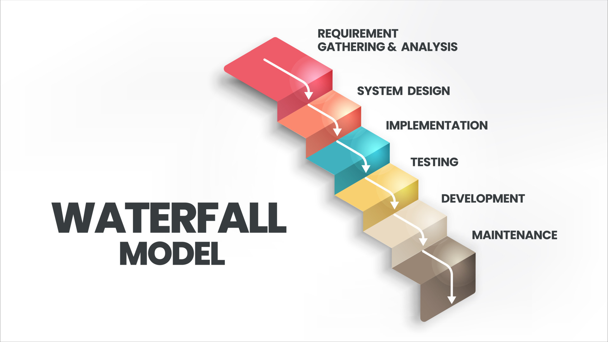
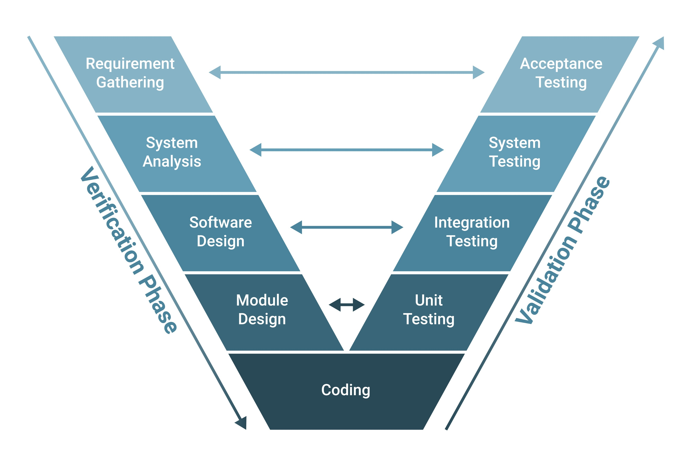
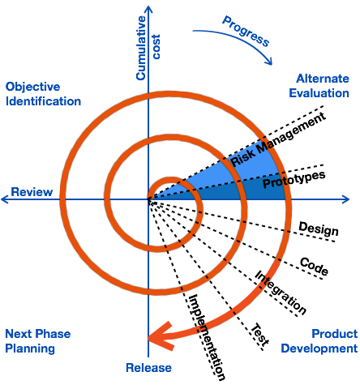
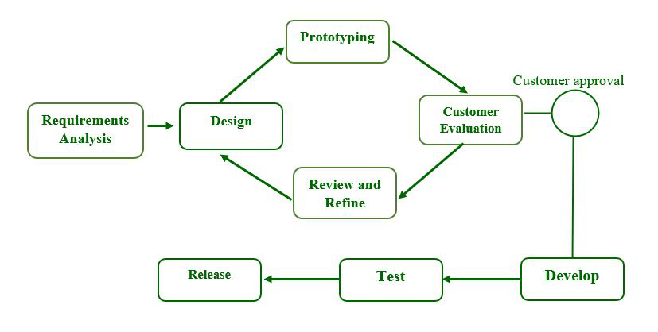
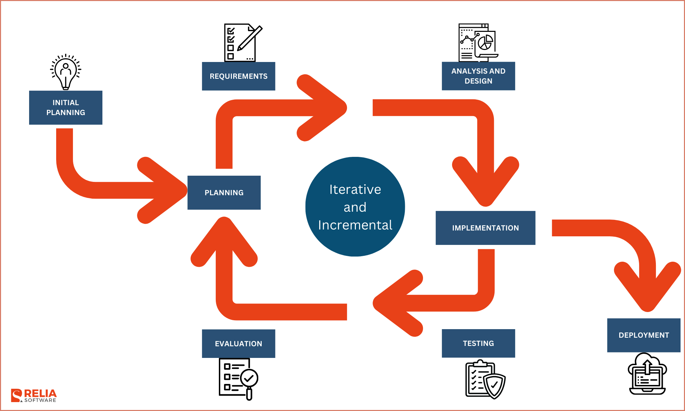
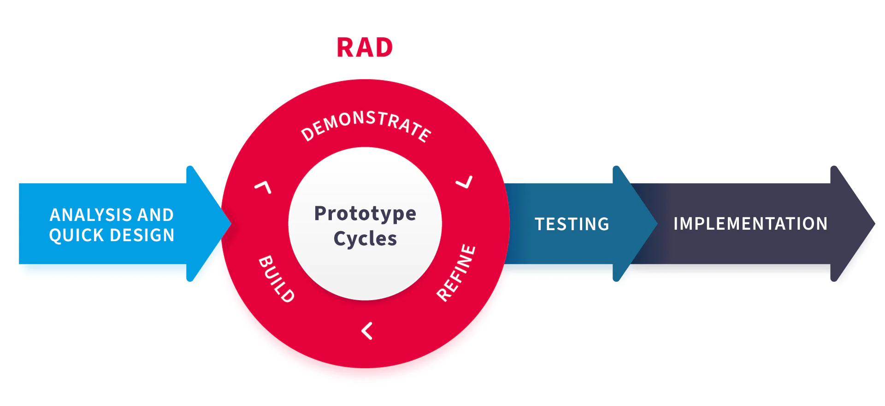
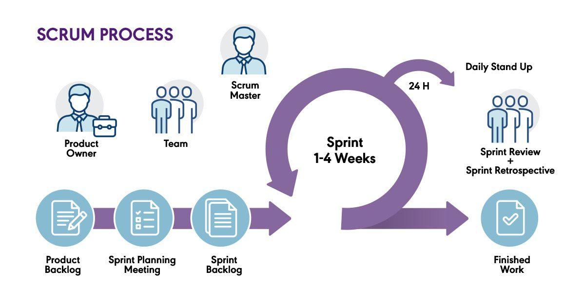

⬅ Vissza a főoldalra
6. tétel: Hagyományos szoftverfejlesztési módszertanok: vízesés modell, V-modell, spirális fejlesztési modell, prototípus alapú fejlesztés, iteratív és inkrementális módszertanok, gyors alkalmazásfejlesztés. Agilis szoftverfejlesztési módszertanok: az agilis szoftverfejlesztés alapjai, az agilis kiáltvány, valamint egy szabadon választott agilis módszertan részletes bemutatása.
Vízesés modell
- Lényege: Hagyományos, szigorúan lineáris szoftverfejlesztési módszertan.
- Folyamat: A fázisok egymásra épülnek, csak előrefelé haladnak. Egy szakaszt teljesen le kell zárni (és dokumentálni) a következő megkezdése előtt.
- Fázisok: Követelményelemzés → Tervezés → Implementáció (Kódolás) → Tesztelés → Üzembe helyezés.
- Hátránya: Rugalmatlan. Menet közben módosítani nagyon nehéz és költséges (a visszalépés nem támogatott). A megrendelő csak a legvégén látja a működő terméket.
- Mikor ideális? Kőbe vésett, fix követelmények esetén, ahol a változás kizárt (pl. életkritikus rendszerek: NASA, orvosi műszerek, beágyazott rendszerek).

V-modell
- Lényege: A vízesés modell továbbfejlesztett változata, amely a tesztelésre helyezi a fő hangsúlyt. A folyamatábra egy "V" betűt formáz (bal ág: Verifikáció/Tervezés, jobb ág: Validáció/Tesztelés).
- Folyamat: A bal oldalon haladunk lefelé a tervezéssel, de minden tervezési fázisnak megvan a maga tesztelési párja a jobb oldalon. A tesztelési terveket már a tervezési fázisokkal egy időben elkészítik.
- Párosítások (példa): Követelményelemzés ↔ Elfogadási teszt; Rendszertervezés ↔ Rendszerteszt; Modultervezés ↔ Egységteszt.
- Előnye: Rendkívül magas minőségbiztosítás. Mivel a teszteket már az elején megtervezik, nagyon alapos és fegyelmezett a kód ellenőrzése.
- Hátránya: A vízeséshez hasonlóan nagyon rugalmatlan. Ha a megrendelő menet közben változtatni akar, az egész "V" ágat újra kell tervezni, ami drága és lassú.
- Mikor ideális? Életkritikus, szigorúan ellenőrzött projekteknél, ahol a követelmények kőbe vannak vésve, és a hibátlanság kötelező (pl. orvosi műszerek, légirányítási szoftverek, katonai rendszerek).

Spirális fejlesztési modell
- Lényege: Az első jelentős iteratív (ismétlődő ciklusokra épülő) modell, amely ötvözi a vízesés modell fegyelmezettségét a prototípus-készítés rugalmasságával.
- Folyamat: A fejlesztés spirál alakban halad belülről kifelé. Minden egyes "kör" (ciklus) egy új fejlesztési fázist jelent, aminek a végén mindig egy működő, értékelhető prototípus jön létre a megrendelő számára.
- Fő jellegzetessége (Kockázatelemzés): A modell legfontosabb egyedi tulajdonsága, hogy minden egyes ciklus kötelezően tartalmaz egy nagyon alapos kockázatelemzési szakaszt (technikai, pénzügyi vagy ütemezési kockázatok szűrése).
- Előnye: A folyamatos prototípusok miatt gyors a visszacsatolás, és a komoly problémák (kockázatok) már a korai fázisokban kiderülnek, mielőtt túl sok pénzt égetnének el.
- Hátránya: A projekt irányítása bonyolult és drága, a siker pedig nagymértékben függ a kockázatelemzők szakértelmétől.
- Mikor ideális? Kifejezetten nagy, drága és bonyolult rendszerek fejlesztésénél (pl. új operációs rendszerek, komplex vállalati architektúrák), ahol hatalmas a kockázat, és a követelmények nem teljesen tiszták az induláskor.

Prototípus alapú modell
- Lényege: Közvetlen válasz a vízesés modell rugalmatlanságára. A végleges kódolás előtt a megrendelő működő (vagy annak tűnő) előzetes verziókat kap a kezébe.
- Folyamat: Gyors követelményfelmérés → Prototípus megépítése → Ügyfél kipróbálja → Visszajelzés (feedback) → Finomítás. Ezt addig ismétlik, amíg a modell tökéletes nem lesz, és csak utána kódolják le a végleges, stabil rendszert.
- Fő előnye (A visszacsatolás ereje): A megrendelő sokszor papíron nem tudja megfogalmazni, mit akar. Ha viszont egy tapintható, kattintható szoftvert használ, pontos és valós visszajelzést tud adni. Az elvárások és a valóság így gyorsan fedésbe kerülnek.
- Hátránya: Az ügyfél gyakran azt hiszi, hogy a "szépen kinéző" prototípus már maga a kész program (nem érti, hogy a háttérrendszer még hiányzik). A sok finomítás miatt a projekt könnyen elhúzódhat.
- Mikor ideális? Erősen interaktív alkalmazásoknál, ahol a felhasználói felület (UI/UX) és a felhasználói élmény a legfontosabb, illetve ha az ügyfél az elején még "nem tudja pontosan, mit akar".

Inkrementális / Iteratív modell
- Lényege: A hatalmas, egybefüggő feladatot kisebb, jól kezelhető darabokra (inkrementumokra) és ismétlődő fejlesztési ciklusokra (iterációkra) bontja. A rendszer nem a legvégén áll össze, hanem lépésről lépésre, darabonként épül fel.
- Folyamat: A munkát egyenlő hosszúságú fázisokra bontják (mint egy sorozat epizódjai). Minden ciklus végén egy újabb, kibővített, működő verziót adnak ki (konstans prototípus / release). Ezt az ügyfél kipróbálja, majd a folyamatos visszajelzések alapján történik a következő ciklus újratervezése.
- Előnye (Könnyű változtathatóság): Mivel a tervezés és a visszacsatolás folyamatos, a modell rendkívül gyorsan tud reagálni a változó igényekre. A megrendelő már a projekt korai szakaszában kap valami használhatót.
- Kapcsolata a Vízeséssel: Nem feltétlenül a vízesés szöges ellentéte, a kettő kiválóan keveredhet (hibrid modellek). Például: a projekt globális tervezése és az architektúra kitalálása történhet vízesés-szerűen, de a konkrét kódolás és tesztelés már iteratív fázisokban zajlik.
- Mikor ideális? Olyan projekteknél, ahol a főbb üzleti célok tiszták, de a részletek még homályosak, és fontos, hogy az alapfunkciókkal (MVP - Minimum Viable Product) minél hamarabb piacra tudjanak lépni.

Gyors alkalmazásfejlesztés (RAD - Rapid App Development) – Rövid vizsgavázlat
- Lényege: A sebességre és a gyors prototípus-készítésre fókuszál a hosszas, papíralapú tervezés helyett. A szoftvert nem a legvégén kezdik el kódolni, hanem a legelső prototípus folyamatos, ismétlődő finomításával jutnak el a hibátlan végtermékig.
- Folyamat: Alapkövetelmények → Felhasználói tervezés (gyors prototípus) → Építés és visszajelzés. A felhasználó azonnal teszteli a prototípust, a fejlesztők pedig akárhányszor újratervezik/finomítják azt a feedback alapján, amíg tökéletes nem lesz.
- Előnyei:
- Gyorsaság: Drasztikusan csökkenti a fejlesztési időt.
- Korai feedback: A megrendelő végig bevonva marad, minimalizálva a félreértéseket.
- Könnyű integráció: A folyamatos tesztelés miatt a végén kevés a meglepetés, és a kódkomponensek jól újrahasznosíthatók.
- Hátrányai:
- Csak erősen modularizálható (egymástól független, legókockaként összerakható) rendszereknél működik.
- Kiváló, tapasztalt (és emiatt drága) szakembereket és nagyon jó előzetes modellezést igényel.
- Mikor ideális? Szűk határidős projekteknél, ahol a szoftver jól darabolható (pl. különálló menüpontok, funkciók), és az ügyfélnek van ideje és hajlandósága folyamatosan tesztelni a köztes verziókat.

Agilis szoftverfejlesztés alapjai
Az alapelképzelés
Az agilis módszertanok célja a korábbi merev rendszerek (pl. vízesés modell) hibáinak kiküszöbölése:
- Kevesebb bürokrácia: Minimálisra csökkenti a felesleges procedúrákat és az adminisztrációt.
- Hatékonyabb erőforrás-kihasználás: A fókusz a valós, értékteremtő munkán van.
- Ügyfél és változás a fókuszban: Nem a tervhez ragaszkodnak vakon, hanem az ügyfél igényeihez, amelyek menet közben is változhatnak.
- Gyors iterációk: A fejlesztés rövid szakaszokban történik (minden iteráció egy önálló, lezárt mini-projekt).
- Inkrementális növekedés: A szoftver lépésről lépésre épül fel, folyamatosan bővül.
- Konklúzió: A siker kulcsa a megrendelővel való folyamatos kommunikáció, a rendszeres egyeztetés, valamint a periodikus és iteratív fejlesztési ciklusok. A végső cél a maximális ügyfélelégedettség (Customer Satisfaction).
Az Agilis Kiáltvány (Agile Manifesto) 4 alapértéke
Az agilis szemlélet szerint, bár a jobb oldalon lévő dolgoknak is van értékük, a bal oldalon lévőket többre értékelik:
- Egyének és interakciók a folyamatokkal és eszközökkel szemben.
- Működő szoftver az átfogó dokumentációval szemben.
- Ügyféllel való együttműködés a szerződéses egyeztetésekkel szemben.
- Változásokra való reagálás a tervek merev követésével szemben.
Az Agilis szoftverfejlesztés 12 alapelve
- Ügyfélelégedettség: Legfőbb prioritásunk az ügyfél elégedettsége, amit az értéket képviselő, működő szoftver korai és folyamatos szállításával érünk el.
- Változások befogadása: Üdvözöljük a változó követelményeket, még a fejlesztés késői szakaszában is. Az agilis folyamatok a változást az ügyfél versenyelőnyére fordítják.
- Gyakori szállítás: Működő szoftvert szállítunk gyakran, pár héttől pár hónapig terjedő időközönként, a rövidebb időskálát előnyben részesítve.
- Folyamatos együttműködés: Az üzleti szakembereknek és a fejlesztőknek naponta együtt kell dolgozniuk a projekt során.
- Motivált egyének: Építsd a projekteket motivált egyénekre. Add meg nekik a szükséges környezetet és támogatást, és bízz meg bennük, hogy elvégzik a munkát.
- Személyes kommunikáció: Az információ átadásának leghatékonyabb és legeredményesebb módja a fejlesztőcsapaton belül a személyes beszélgetés.
- Működő szoftver: A haladás és a siker elsődleges mércéje maga a működő szoftver.
- Fenntartható tempó: Az agilis folyamatok a fenntartható fejlesztést támogatják. A szponzoroknak, a fejlesztőknek és a felhasználóknak képesnek kell lenniük egy állandó, tartható munkatempó megőrzésére.
- Technikai kiválóság: A technikai kiválóságra és a jó tervezésre való folyamatos odafigyelés növeli az agilitást (a rugalmasságot).
- Egyszerűség: Az egyszerűség – vagyis az el nem végzett (felesleges) munkák maximalizálásának művészete – elengedhetetlen.
- Önszerveződő csapatok: A legjobb architektúrák, követelmények és tervek az önszerveződő csapatoktól származnak.
- Rendszeres finomhangolás: A csapat rendszeres időközönként visszatekint (retrospektív), elemzi, hogyan válhatna hatékonyabbá, majd ehhez igazítja a viselkedését és a folyamatait.
A Scrum keretrendszer
A Scrum a legelterjedtebb Agilis keretrendszer, amely egyértelmű szabályrendszert ad a komplex termékek iteratív fejlesztéséhez.
Az alapvető felosztás: Disznók és Csirkék
A klasszikus Scrum analógia szerint a projektben résztvevőket két csoportra bontjuk (egy rántottás reggeli példája alapján):
- Disznók (Pigs): Akik a "húsukat adják", azaz teljesen elkötelezettek, ők végzik a munkát és ők viselik a kockázatot (Fejlesztők, Scrum Master).
- Csirkék (Chickens): Akik csak "bevonódnak", vagy anyagi érdekük fűződik a projekthez (pl. a Stakeholderek, befektetők, megrendelők).
Szerepkörök és a köztük lévő dinamika
A Scrum csapat önszerveződő. Három hivatalos szerepkör létezik:
-
Product Owner (Terméktulajdonos) – "A Korbács":
- A megrendelőt helyettesíti (aki általában nem ér rá), és komoly domain tudással rendelkezik az adott szektorról (pl. postai rendszerek). Fontos: nem a megrendelőnek dolgozik!
- Ő határozza meg a prioritásokat, egyedül ő kezeli a feladatlistát (Product Backlog). Ő dönti el, melyik User Story a legfontosabb, gyakorlatilag ő hajtja a projektet előre.
-
Scrum Master (Scrum Mester) – "A Pajzs":
- A folyamat felelőse, aki ismeri a csapattagokat és a vezetőket is. Ő nem főnök, de ő intézi el a dolgokat és ő hárítja el az akadályokat.
- Legfontosabb feladata: megvédeni a csapatot a kiégéstől (ő tartja a pajzsot). Hatalmas a felelőssége: ha a projekt sikertelen, általában őt rúgják ki.
- Szakmai alapszabály: A PO és az SM elméletben lehetne ugyanaz a személy, de nem szabad, mert ellentétesek az érdekeik. Az egyik hajtja az embereket, a másik ez ellen védi őket.
-
Development Team (Fejlesztőcsapat):
- Lapos hierarchiájú szakértői gárda, ők végzik a tényleges munkát és vállalnak felelősséget.
Tervezés és Becslés (Planning & Estimation)
- Product Backlog és Sprint Backlog: A követelmények listája. A Grooming (finomítás) és a tervezés során a PO dönti el, mi kerüljön át a nagy listából az aktuális Sprint feladatai közé.
- Becslés (Planning Poker): Ezzel a módszerrel becsülik meg, hogy egy User Story hány sprintbe kerül.
- Embernap vs. Story Pont: Az embernap egy ember napi 8 óra munkája (amiben benne van a kávézás és a "Tiktok pörgetés" is). Egy csapat kapacitása általában 7-8 story pont sprintenként (ez lehet 1 nagy, vagy 2 kisebb story). A nagyokat mindig érdemes kisebbekre bontani.
Események
A Scrum kötött idejű eseményekkel dolgozik:
- Sprint: Maga az iteratív fejlesztési rész (általában 1-4 hét), ahol a magas prioritású feladatokkal foglalkozunk először.
- Daily Stand Up Meeting (Napi állóértekezlet):
- Szigorú szabályok: Maximum 15 perc, és kötelezően állva kell tartani.
- 3 kérdés mindenkinek:
1. Mit csináltál tegnap?
2. Mit fogsz ma csinálni?
3. Milyen akadályokba ütköztél?
- Kik vehetnek részt? Szigorúan csak a "Disznók". Maximális őszinteség kell (nem mondhatod meg a tulajdonos előtt, ha a csapattársad "gyökér"). A PO határeset: ha részt vesz, disznóvá válik, ha nem, csirke marad.
- Sprint Review (Bemutató):
- A Sprint végén átadjuk/bemutatjuk a kész, működő prototípust.
- A PO-nak ezt el kell fogadnia. Ha nem fogadja el a storyt, elméletben újra kell indítani a sprintet, ami a Scrumban megengedhetetlen hiba.
- Sprint Retrospective (Visszatekintés):
- A Sprint lezárása. Itt értékelik a csapatműködést (mi ment jól, mi rosszul). Itt már a feszültségoldás a lényeg: "esszük a pizzát, sörözünk, megy a bowling". Meg kell köszönni a munkát, mosolyogni és mindenre bólintani.

Az eXtreme Programming (XP) keretrendszer
Az XP egy Agilis módszertan, amelynek alapfilozófiája: vegyük a szoftverfejlesztés bizonyítottan jó gyakorlatait, és tekerjük fel őket az "extrém" végletekig.
Ha a kódátnézés jó, csináljuk folyamatosan (Páros programozás). Ha a tesztelés jó, teszteljünk kódolás előtt (TDD).
Szerepkörök és a köztük lévő dinamika
Az XP-ben nincsenek bonyolult hierarchiák, a csapat szorosan együttműködik az üzleti oldallal:
- Helyszíni Ügyfél (On-site Customer) – "Az Iránytű":
- A Scrumban lévő Product Ownerhez hasonló, de az XP ezt a végletekig viszi: az ügyfélnek (vagy képviselőjének) fizikailag a csapattal egy irodában kell ülnie, vagy azonnal elérhetőnek kell lennie.
- Nincs hetekig tartó e-mailezés. Ő mondja meg a "Mit" (üzleti igények, sztorik), de nem szól bele a "Hogyan"-ba.
- Fejlesztő (Developer) – "A Motor":
- Nincsenek elkülönült "tesztelő", "dizájner" vagy "architekt" szerepkörök. Minden fejlesztő keresztfunkcionális, mindenki csinál mindent.
- Edző (Coach) – "A Lelkiismeret":
- A Scrum Master XP-s megfelelője, de a fókusz itt a technikai fegyelmen van. Ő figyel arra, hogy a csapat ne lustuljon el, ne sumákolja el a tesztírást, és betartsa az XP szigorú szabályait.
Tervezés és Becslés
- A Tervezési Játék (The Planning Game): Ez egy közös "játék" az ügyfél és a fejlesztők között. Az ügyfél "játssza ki" a funkciókat (User Story-kat) az üzleti érték alapján, a fejlesztők pedig megbecsülik a költséget és az időt.
- Spike (Felderítés): Ha a csapat kap egy feladatot, amiről fogalma sincs, hogyan oldja meg, nem tippelgetnek. Írnak egy gyors, eldobható kísérleti kódot (ez a Spike), csak azért, hogy megértsék a problémát és pontosan tudjanak becsülni.
A legfontosabb XP Gyakorlatok
Ezek azok a szigorú technikai szabályok, amiktől az XP azzá válik, ami:
- Páros Programozás (Pair Programming):
- Két ember ül egy monitor előtt. Az egyik a "Sofőr" (ő gépel, a részletekre figyel), a másik a "Navigátor" (ő diktál, a nagyobb képet, az architektúrát nézi és azonnal észreveszi a hibát).
- Szakmai titok: A menedzserek gyakran utálják, mert úgy tűnik, az egyik ember "csak nézi a képernyőt", de a valóságban a hibák drasztikus csökkenése miatt hosszútávon sokkal olcsóbb.
- Tesztvezérelt Fejlesztés (TDD - Test-Driven Development):
- A logika teljes megfordítása. Tilos kódot írni anélkül, hogy ne lenne rá teszt.
- A "Red-Green-Refactor" ciklus: Először megírjuk a tesztet ⇒ az elhasal (Piros, hiszen még nincs kód) ⇒ megírjuk a legminimálisabb kódot, amivel a teszt átmegy (Zöld) ⇒ utána letisztázzuk, szépítjük a kódot (Refaktorálás).
- Közös Kódtulajdon (Collective Code Ownership):
- Nincs olyan, hogy "ez a te kódod, én nem nyúlok hozzá". A kód mindenkié. Bárki, bármikor belenyúlhat bármelyik modulba, ha hibát lát, mert a felelősség is közös.
- Folyamatos Integráció (CI - Continuous Integration):
- A fejlesztők naponta többször feltöltik a munkájukat a közös tárhelyre. A rendszer ezt azonnal, automatikusan leteszteli.
- Célja: Ezzel küszöbölik ki az IT iparág leghíresebb kifogását: "De hát az én gépemen még működött!"
- Fenntartható Tempó (Sustainable Pace):
- A túlóra szigorúan tilos. Az XP abból indul ki, hogy egy fáradt fejlesztő csak szemetet kódol, ami később visszanyal. Maximum heti 40 óra, hogy a minőség tartós maradjon.
Az 5 alapérték (Filozófia)
A fentieket ez az 5 érték tartja egyben: Kommunikáció (ügyféllel, egymással), Egyszerűség (mindig a legegyszerűbb megoldást választjuk), Visszacsatolás (a tesztek és az ügyfél azonnal jelez), Bátorság (merjünk letörölni és újraírni egy rossz kódot), Tisztelet (egymás és a közös munka iránt).